Consultar disponibilidad
ConsultarUsados y 0 km en Concepción del Uruguay. Mirá entregas reales y consultá con la agencia lo que todavía hay que confirmar.
4,745 reseñas en Google · registro público de quienes pasaron por acáFotos publicadas por Chita Automotores en sus redes.
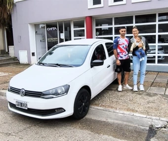
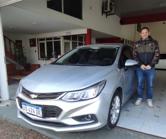
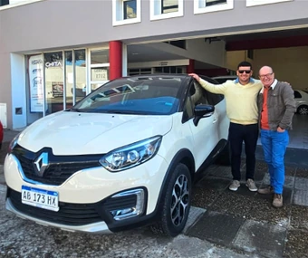
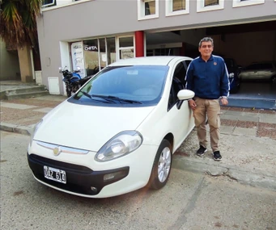
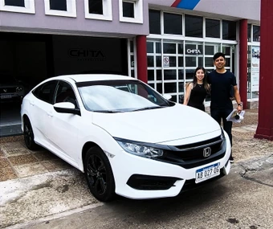
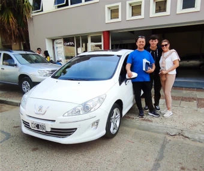
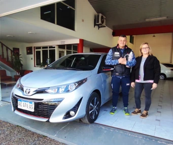
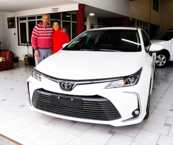
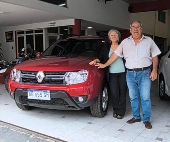
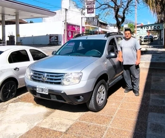
★★★★★ 4,7 de 5 con 45 reseñas en Google · Recomendado por el 100% en Facebook (22 opiniones) · octubre de 2026 · entregas visibles y reseñas externas son registros distintos
Abrí el remito de una unidad para ver todas las fotos. La agencia te confirma si sigue disponible y qué falta conversar.
No hay unidades con esa búsqueda. Escribinos y te contamos qué ingresa.
Consultar disponibilidad
Consultar
Consultar disponibilidad
Consultar
Consultar disponibilidad
ConsultarConsultar disponibilidad
Consultar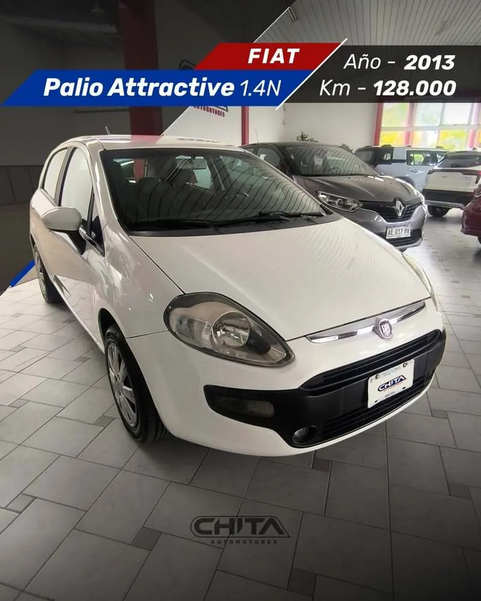
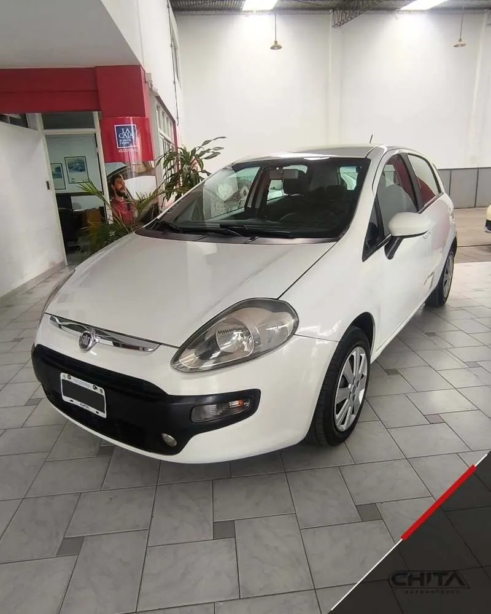
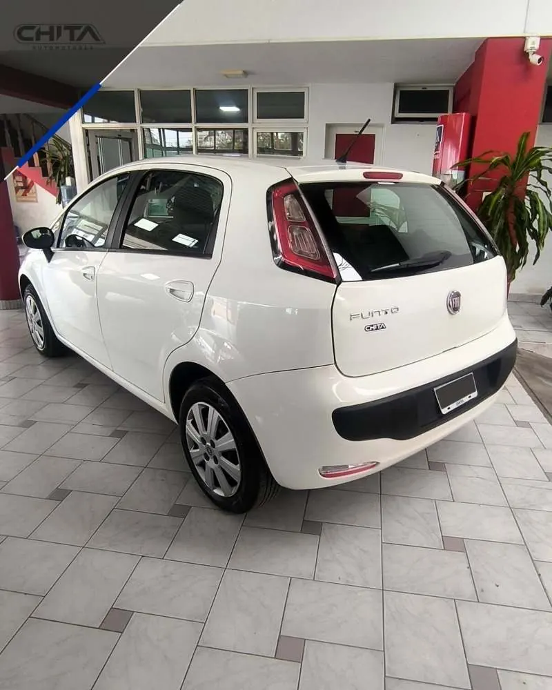
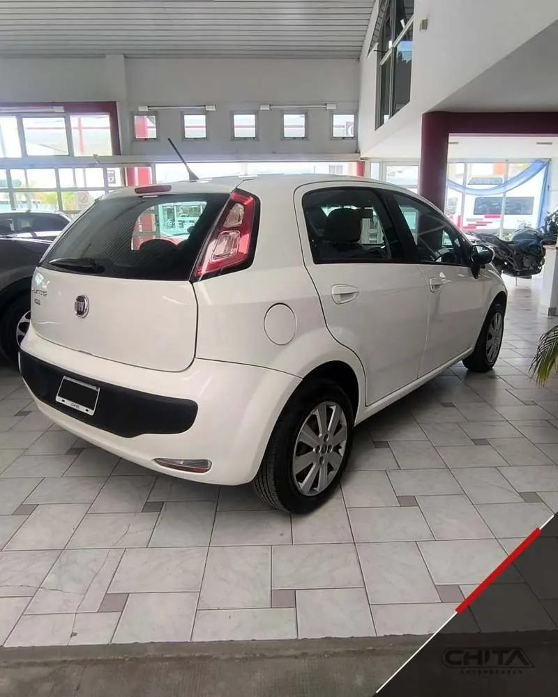
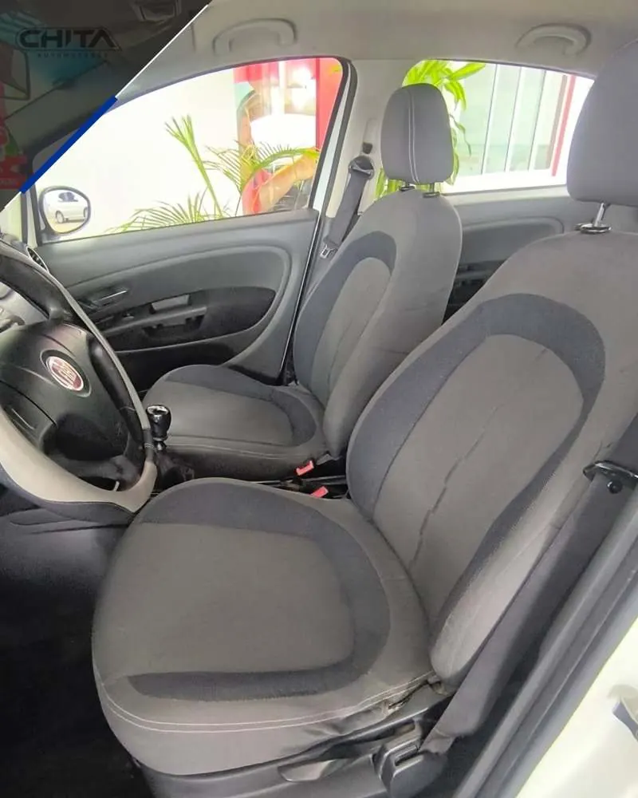
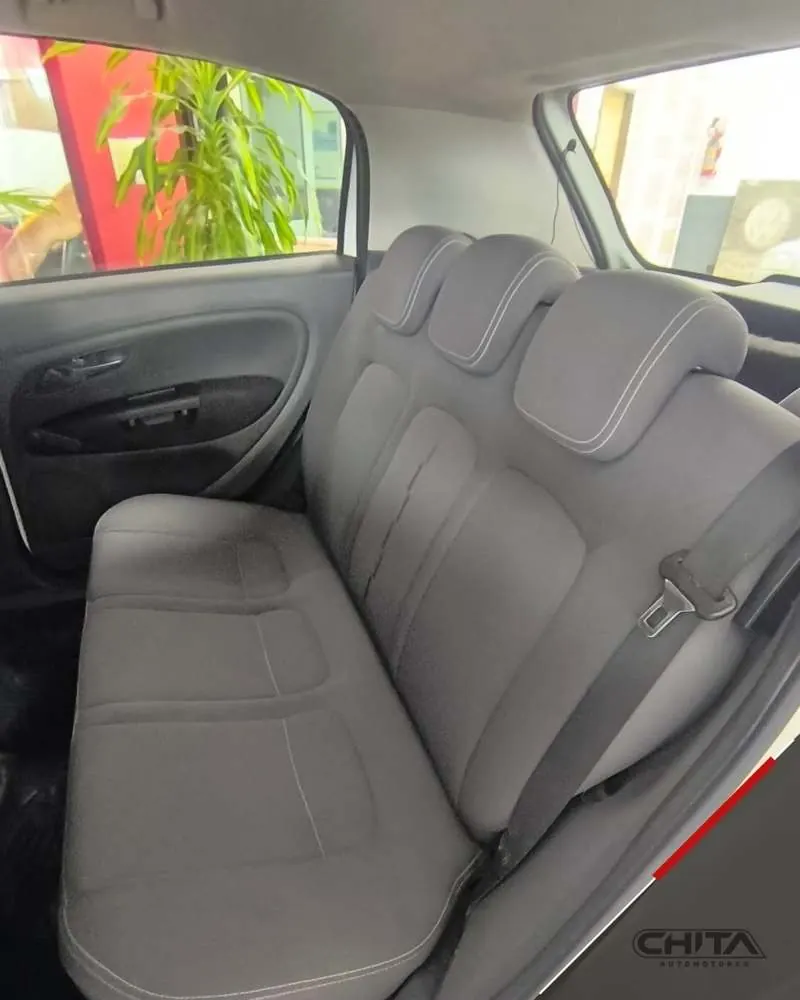
Consultar disponibilidad
Consultar
Consultar disponibilidad
Consultar
Consultar disponibilidad
Consultar
Consultar disponibilidad
Consultar
Consultar disponibilidad
Consultar
Consultar disponibilidad
ConsultarConsultar disponibilidad
ConsultarN.º · unidad · año · km · fotos. Abrí una fila para leer su hoja.
Elegí hasta tres unidades y medí lo publicado. La regla señala diferencias; lo que falta, se pregunta.
«Sin informar» no quiere decir que la unidad no lo tenga: anotá qué preguntar y confirmalo con la agencia.
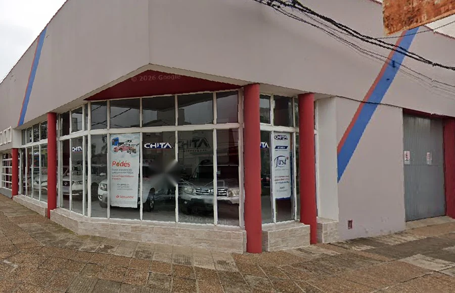
Chita Automotores atiende en Gral. Galarza 1712. Vas a encontrar autos usados con sus fotos y datos. También podés consultar por 0 km, tu usado y financiación; las condiciones vigentes las informa la agencia.
La Regla · origen y llegada · según Moovit
Distancias aproximadas. Los recorridos pueden cambiar.
Confirmá antes de venir. Escribinos o llamanos y coordinamos la visita.
Los autos quedan a la vista desde la calle.
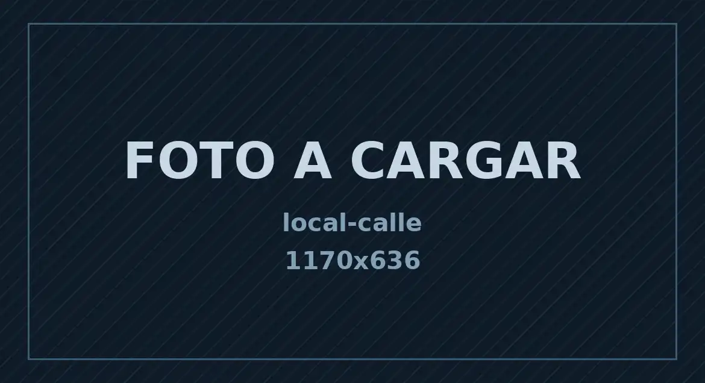
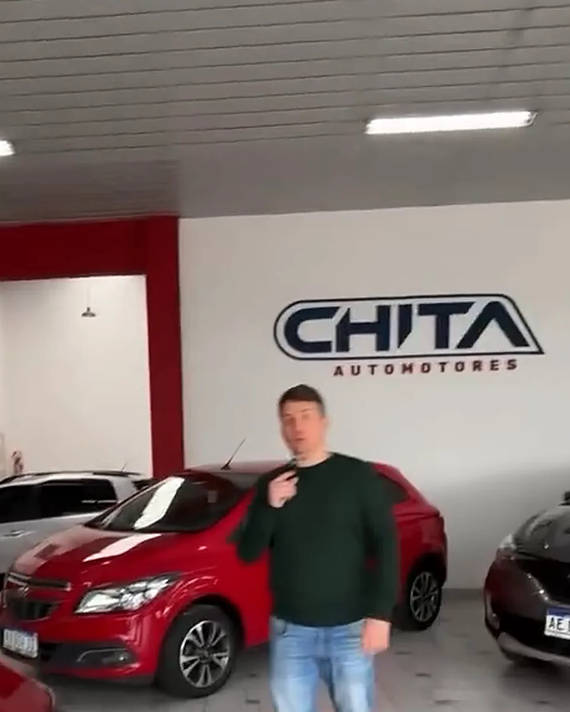
El cartel de Chita sobre la columna y los ventanales con los autos a la vista.
Los ventanales dejan ver los autos antes de entrar.
Así se ve por dentro, de la mano de alguien del equipo.
Sobre la pared blanca, junto a la columna roja. Si lo ves, llegaste.
Chita no reescribe ni selecciona estas opiniones: están en la ficha de Google Maps. Leelas ahí, tal como las publicó cada persona, antes de venir.
Google muestra una valoración de 4,7 de 5 con 45 reseñas (puede variar).
Cada casilla es una de las 45 reseñas que Google muestra hoy.
Comprar un usado
Del primer vistazo a la visita, sin vueltas.
Precio y pago
Cada unidad se consulta de forma personal: escribinos y te respondemos con el precio actualizado y las condiciones vigentes de la financiación y de tu usado.
Financiación en cuotas fijas. Consultanos las condiciones vigentes.
Recibimos tu usado y lo evaluamos según cada caso.
ConsultarSegún el Instagram de Chita
Elegí el movimiento que querés iniciar. Cada opción prepara un talón distinto y la consulta la enviás vos por WhatsApp.
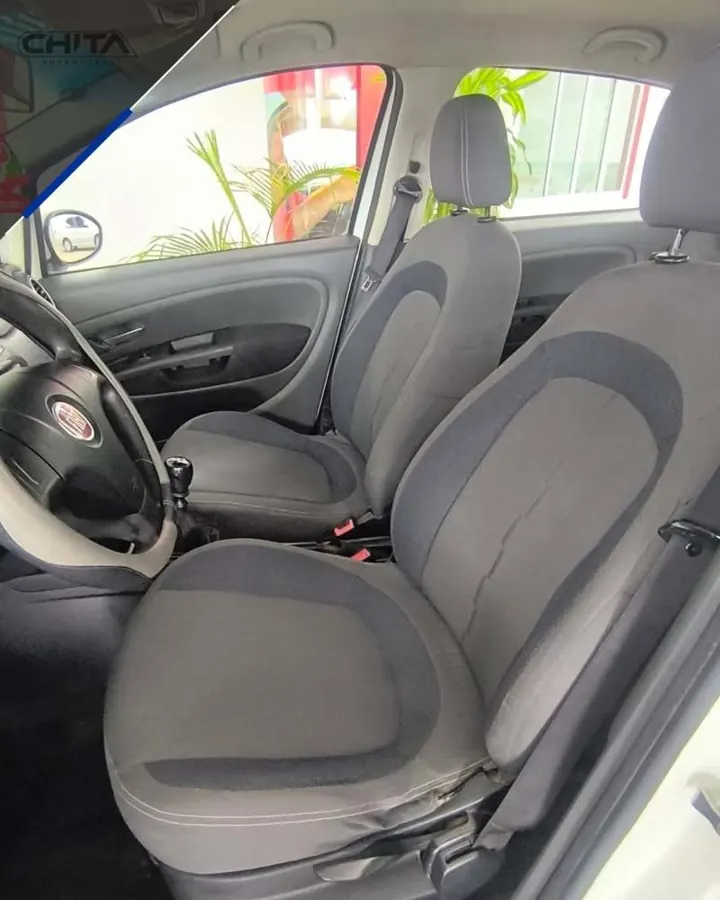
Dejá tu auto en consignación: escribinos con sus datos y te contamos cómo funciona.
Consultar →Antes de decidir
Comprar o permutar un usado es una decisión importante: conviene llegar con las preguntas claras y los papeles a mano.
Guía general
Información general. Los requisitos los define el Registro Seccional: confirmalos antes de operar.
Consultá en el Registro si corresponde presentar otros certificados, por ejemplo de deudas o infracciones.
Este sitio no calcula precios ni tasaciones: la evaluación la hace el negocio.
Se hace en el Registro Seccional de la Propiedad del Automotor, con comprador y vendedor identificados. El arancel depende del valor del vehículo y de su origen, y la DNRPA ofrece un estimador online para calcularlo. Pedí siempre la información actualizada en el Registro.
Contenido general revisado en septiembre de 2026. Las normas y los costos del trámite pueden cambiar.
Si te queda alguna duda sobre una unidad, escribinos y la vemos juntos.
Información general
Chita Automotores
Un auto se elige mejor en persona: mirándolo de cerca, revisando cada detalle y despejando todas las dudas.
Antes de ir
Elegí las unidades que querés ver y contanos cuándo te queda cómodo. Se abre WhatsApp con tu consulta lista para enviar; también podés llamar a la agencia.
Abrir talón de visita ↗Te confirmamos que la unidad siga disponible y coordinamos el día. Te esperamos en Gral. Galarza 1712, en Concepción del Uruguay.
Gral. Galarza 1712 · Concepción del Uruguay
E·13 · El próximo es el tuyo
Dejanos marca, modelo y lo que te importa. Se abre WhatsApp con tu consulta lista para enviar.
Respuestas cortas sobre unidades, financiación, tu usado, consignación y visitas.
Las unidades de esta página son usados. Si buscás un 0 km, consultanos qué hay hoy y en qué condiciones.
Sí, recibimos tu usado y lo evaluamos. Contanos marca, modelo, año y kilometraje y te respondemos; cómo se toma depende de cada caso.
Financiación en cuotas fijas. Escribinos qué unidad te interesa y te pasamos las condiciones vigentes.
Dejá tu auto en consignación: escribinos con sus datos y te contamos condiciones y documentación.
Cada unidad se consulta de forma personal: escribinos y te pasamos el precio vigente.
Escribinos o llamanos antes de venir: confirmamos que la unidad siga disponible y coordinamos el día. También podés armar la consulta en Coordiná tu visita.
¿No encontraste lo que buscabas?
Llamanos